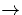
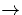

The LVMs are given in the table. The 998 and 902 cm-1 modes are
localised on Oc and Oa. The 813 cm-1 is localised on
Ob. The 665 cm-1 and other modes are extended over all the O
atoms. Thus the effect of an additional O is to displace upwards the
mode due to VO2 by about 100 cm-1 and introduce an additional
mode  1000 cm-1. This top mode is in good agreement with a
mode found at 1005 cm-1, although the other modes are about
70-100 cm-1 too low. A similar error was found for VO2, and
this error lies within the uncertainties of the method, and again, the
upward mode shift from VO2  VO3 is correctly
predicted. The prediction and observation of three O-related modes
supports the assignment of the modes at 1005, 976, 910 cm-1 to
VO3 and therefore indirectly the 889 cm-1 mode to VO2.
1000 cm-1. This top mode is in good agreement with a
mode found at 1005 cm-1, although the other modes are about
70-100 cm-1 too low. A similar error was found for VO2, and
this error lies within the uncertainties of the method, and again, the
upward mode shift from VO2  VO3 is correctly
predicted. The prediction and observation of three O-related modes
supports the assignment of the modes at 1005, 976, 910 cm-1 to
VO3 and therefore indirectly the 889 cm-1 mode to VO2.
Just as we had trouble finding the lowest energy structure for VO2, we also found a low energy structure for VO3 consisting of an OV centre with two Oi atoms in the dilated bonds neighbouring the Si-O-Si of the OV. This is similar to the alternative VO2 model described above but with an additional Os sitting in the vacancy. This proved to be lower energy than the VO3 model described above, and also had good agreement with experimental LVMs. However since the energies of VO2 have to be corrected in order to find the actual lowest energy structure we have assumed this also applies to VO3, and so exclude this model. Experimental stress induced alignment experiments should be able to differentiate between these two centres, since the VO3 presented above has C1h symmetry, whereas this low energy VO3 has C2v symmetry. Work is currently underway on the higher order VOn complexes by Lindström and Hallberg, and hopefully they should be able to check this.